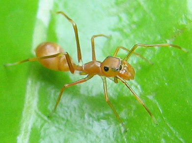

Contents
Unseen Creatures Which Feed On Humans
This is NOT an ant.

It is a Spider
Guess what it eats.
This spider is Myrmarachne plataleoides. It walks among the ferocious weaver ants and feeds upon them unchallenged. The ants never suspect. They are not equipped to recognize the danger. There are creatures which feed upon us unchallenged because we are not equipped to recognize them - not with the five senses anyway. After reading this article you will be able to spot them and perceive their true nature as clearly as magnification reveals the true nature of this spider.
You might be thinking, "Humans are much smarter than ants. No creature could move among us unseen." Well of course germs and viruses do. But those are not the kind of creatures I am referring to. Still, in order to prepare you to perceive the creatures exposed in this article, it will help you to consider that only 150 years ago, most people didn't believe microorganisms existed.
In 1843, Dr. Oliver Wendell Holmes, Sr. (father of the Supreme Court judge) published The Contagiousness of Puerperal Fever, which argued, physicians and nurses frequently carried childbed fever, a deadly disease of women giving birth, from patient to patient.
A few years later (1847), Dr. Ignaz Semmelweiss, while employed at the maternity clinic of the Vienna General Hospital in Austria, introduced hand washing for his interns. This reduced the incidence of fatal childbed fever from 10 percent to about 1 percent. Semmelweiss' hypothesis was that pathogens too small to be seen remained on the interns' hands after conducting autopsies and that these pathogens were causing the deaths of his patients.
Holmes, seeing even more clearly than Semmelweiss proposed the existence of microorganisms and suggested that they were causing the disease. His famous essay anticipated Pasteur's discovery of Germ Theory later in the century.
The medical community was not only doubtful but also enraged at the idea that they themselves were introducing the pathogens that were killing their patients. Holmes and Semmelweiss were largely ignored, rejected and ridiculed. Semmelweiss was dismissed from the hospital, harassed by the medical community and was eventually forced to leave Vienna. He died a broken man in a mental institution only two years before Louis Pasteur did his famous experiments proving that microorganisms existed and that they in fact did cause disease.
With this understanding of the skepticism toward microorganisms only 150 years ago, you may now be willing to consider the existence of Macroorganisms. I am addressing one now as you read this. Not you - you are an organism. You are made up of various cells all descended from the same fertilized egg. All of your cells work together sharing materials and information while each one is specialized for a specific task. A macroorganism is made up of various organisms which work together in much the same way your cells do. As I publish this document to the Internet and optimize it's rating on Google, I am also addressing the public in its entirety as a single intelligent living organism of which you and I are a part. It has a lot of names. Invisible Hand, Complex Adaptive System, Distributed Consciousness, Swarm Intelligence, Superorganism, Hyperbeing, Hive Mind, World Market, Collective Consciousness, and Macroorganism are a few of those names. Let's call it Mac for short.
To understand who Mac is and what I am trying to do, just imagine me as a single human brain cell trying to communicate with the human mind which emerges as the side effect of me and all my brother and sister brain cells conducting our personal business. This business consisting mostly of trading chemicals and chattering with the brain cells we happen to be directly connected to. The rich complexity of this human mind results from the fact that no two brain cells are connected to their neighbors in exactly the same way and yet every cell is able to communicate with every other by passing messages through intermediary cells. This explains our complexity, but what about consciousness? There are lots of complex systems that aren't conscious. We are conscious because our brain cells are connected in feedback loops. That means that the things Herbie the Brain Cell says to its neighbors affect the things the neighbors say back to Herbie which in turn affects the things that Herbie says to his neighbors. And so it is with people who are connected to other people in feedback loops but none connected in exactly the same way and yet somehow all able to communicate with each other through intermediary people and through media like books, television and now the Internet. Mac emerges from all this connected chatter.
If you don't believe that Mac exists that's quite understandable. After all, where is he? Well where exactly is your consciousness? That question has no meaning because if consciousness isn't moving it ceases to exist. Consciousness cannot be found in any of your brain cells. It's the information (pulses of electricity and electrochemical potentials) that bounce between the cells. Give someone anesthesia (that is to say block the exchange of electrochemical energy between brain cells) and we have unconsciousness. Consciousness is energy moving in complex interconnected feedback loops. Let's call it a "feedback web" so we don't have to keep saying "complex" and "interconnected". It's energy so it's hard to see, its movements are too complex to track, and it ceases to exist when it stops moving. Yes, consciousness is hard to comprehend, but to imagine that the brain is the only place where feedback webs occur is not rational, helpful, or as we shall see, safe.
I'll bet you're wondering; "If Mac is conscious and alive, how come he never talks to us"? Well you don't you talk to your brain cells do you? Of course not; instead you might have a glass of wine so that they will stop talking to you. There are three main reasons we don't try to communicate with our brain cells. The first is that brain cells are very simple compared to us and so they think about very simple things like "How much neurotransmitter am I receiving" and "Should I release my store of neurotransmitters to other brain cells?" So we don't have much to discuss with our brain cells. Secondly, we are interested in very different things. We normally trade in money, food, or sex not neurotransmitters. The third reason we don't communicate with our brain cells is that we think at different speeds. It only takes a couple of milliseconds for a brain cell to decide whether or not to release its store of neurotransmitters but it may take us 5 minutes or more to figure out how much money to tip the waiter. In any case, it seems likely that these constraints on conversation also apply to our relationship with Mac where humans think at a faster rate than Mac but with a much smaller range of ideas and seemingly no common interests. Well, actually we do have common a interest. Mac's well-being as an individual is completely dependent on our well-being as a group. And our well-being as a group is dependent on Macs well-being as an individual. Furthermore, we share a common enemy as well. That is the subject of this article, but we're not prepared to discuss that just yet.
Of course a single brain cell is not complex enough to understand that consciousness emerges from many simple processes all connected in feedback webs. But humans do have the complexity to understand this. Furthermore, humans are capable of understanding that the processes we collectively engage in are also connected in feedback webs and so give rise to an emergent consciousness (Mac) which has thoughts and a will of its own, independent of the people from which it emerges. Still, despite our ability to understand, few people have ever pondered all of humanity as a single living thinking intelligent creature.
How intelligent is Mac? Well we don't even have a way to measure human intelligence that gives a result most scientists will agree on. In fact there is wide argument as to what even constitutes intelligence. Still it seems that we can obtain a relative estimate of intelligence between different animals by counting the number of brain cells (nodes) they have and then multiplying by the amount of connections each brain cell has with other brain cells. A typical human has trillions of such connections. While never having undertaken the calculation, I would venture that Mac now has less connections than a typical adult human but perhaps more than a human fetus.
While the collective mind that emerges from individual human busyness is intelligent enough to direct activity in large amounts of people, it lives at a speed millions of times slower than we humans live and so I may never receive any personal benefit from my efforts to engage it. Imagine trying to steer a ship that might take a lifetime to turn. Now imagine that you don't get to steer, that you only get to push on the tiller along with millions of others. Seems hopeless until you consider that you can talk with others and ask them to push with you (the Internet makes it possible for me to ask nearly everyone on the planet to push with me). In this way I speak with Mac. I engage him because I see an opportunity to guide his growth. And ultimately, the growth of this collective mind determines how it treats its body. And its body is you and me and our children.
Is it crazy to suggest that we are part of a macroorganism which is simply too large and too complex to perceive? Maybe, but 150 years ago people who suggested the existence of microorganisms too small to be perceived were also dismissed.
Humanity is a macroorganism in its embryonic state. It is desperately trying to wire itself together and to grow. Politicians, judges and lawyers are the closest thing Mac has to an obstetrician. The law exists to define how Mac should function. Lawmakers and judges are the ones that examine Mac to determine if it is functioning well. If not, they apply the remedy. But along with their treatments they are inadvertently spreading disease into Mac's newly forming body. So like any embryo exposed to pathogens Mac is forming tragic defects.
Here's one example. Do you remember I told you that the consciousness that we are calling Mac does not exist in any person but is rather the information that moves between people in feedback webs? Well the family is the most basic and stable feedback web that emerges between humans. And so like all feedback webs, families are alive and to some extent conscious. How do we know they're alive? If anything that seeks to feed, grow, learn, adapt, defend itself and reproduce is alive: than families must be alive. Families do all these things. And how do we know they are conscious? Because they talk to themselves, because they regulate their own behavior, and because they learn. Families are tiny macroorganisms. Families aren't conscious to the extent we are. They are more or less conscious the way a beehive or an ant colony is conscious. Still, no matter what the extent to which a family is conscious, we are highly affected by what they do and by what happens to them. The family is where everything starts and where everything ends. Whether we're speaking of a day, or a lifetime, the first thing we see when we open our eyes and the last thing we see when we close them is family. And everything we do in between is for our families. Communities, companies, countries and world markets (Mac itself) are all built upon families. If we didn't have families we would never bother to form these. The family (not the individual) is the most fundamental building block of the human macroorganism. Yes, families are made up of individuals but an individual alone cannot produce another individual. The family's main function however is producing individuals (children). Now the main function of the courts is to promote rights for individuals that have a voice in the legal system. So if it suits the interests of any adult to cash out of his or her marriage, the courts exist to facilitate that process and to distribute the family's accumulated wealth while securing a sizable portion for those members of the legal community that participate in the harvest of these living things. Of course there are times when divorce is necessary and people should have the right to terminate their marriages. But because partners who bring little wealth into a marriage can easily cash out with half the assets (more if they claim abuse), marriage has become an unstable proposition. And when you consider the fact that harvesting families is a profitable business for the legal community and that they solicit for vulnerable or opportunistic family members to enter into the divorce process, you start to get an idea of how slippery the foundations of our marriages actually are.
What does this have to do with Mac? Healthy families are highly likely to produce healthy productive children and broken families are highly likely to produce broken children. Broken families produce more pregnant drug addicted girls and more boys who commit crimes and spend time in jail. How many more? It's impossible to know exactly but all experts agree that children from broken families are more likely to smoke, drink, drug out, drop out, commit crimes, get pregnant, rot in jail and die early. It is well known that broken children are more likely to produce broken families so if you do the math you will understand that what we're looking at is a chain reaction of self-destructing families that's very hard to see because each reaction in the chain takes a generation to manifest. Nonetheless, in only a few generations we hit a saturation point where pretty much everyone expects their families will self-destruct. So instead of trying to figure out how to keep a family together when times are tough, individuals are trying to figure out how to cut their losses, which of course raises the likelihood that the family will disintegrate. It's a lot like a run on a bank. When people stop trusting a bank, everyone runs to get their money out before it collapses. This of course, makes the bank collapse. Mistrust causes the collapse of everything from world markets right down to families.
The courts exist to inoculate against mistrust but mistrust is the very disease that the courts are inadvertently spreading. Marriage law emerged to protect families (especially children). But the courts destabilize an already risky proposition by making it easy to cash out and profitable for lawyers.
Now a family court judge might argue, "We know you’re not supposed to break up families and sell the pieces for pennies on the dollar. In fact, we don't allow that. In order to get a divorce you have to have a complaint." That's right; it has to appear as if someone is at fault. You simply cannot have justice without fault. So witch hunters are hired (lawyers adept at demonizing). The lawyers provoke the couples to provoke each other, and then it all goes to a family court judge who conducts a seance to conjure the nebulous spirit of justice. When it's all over, the kids lose everything. They lose what could have been a stable family. They lose the guidance they could have had if their parents had stayed together. And they lose the education their parents would have been able to save for had they not been required to start all over again and support two separate homes. All of this is bad for everyone because an increase in unguided, uneducated children produces an increase in unguided, uneducated adults who produce more broken families. And broken families make weak building blocks for communities, companies, and countries. These broken families are birth defects in Mac's newly forming body.
This doesn't happen because judges and lawyers are bad people. They're just administrating their role in the legal system and they're relying on the legal system to function as intended and to provide the best possible solution to the problems that families bring to them. What no one seems to realize is that the legal system itself is a living macroorganism and that it feeds off the wealth liberated when families are destroyed. So while lawyers are using the legal system to solve problems for the families they represent, the legal system itself seeks to crack families open and consume their wealth.
This is not some metaphor. I meant exactly what I said. The legal system is alive. More accurately, it is a living consciousness that emerges from all the information that passes between its parts. Let's call it The Spirit of the Law. How do we know it's alive? If anything that seeks to feed, grow, learn, adapt, defend itself and reproduce is alive: than the legal system must be alive. Like families, the legal system does all these things. And how do we know it's conscious? Because it talks to itself, because it regulates it's own behavior, and because it learns. The legal system is a feedback web of judges, lawyers, expert witnesses, social workers, litigants, administrators, and the public all connected through speech, documents, computers, the media, bank accounts, and culture. This living, breathing, eating consciousness cannot be found in any judge, computer, law book or any other part of the legal system. It emerges from the information that bounces between all these. It's a macroorganism much smaller than the one we've been calling Mac, but much larger than the ones we call families. It came to exist as a result of human legal busyness. It's not good or bad. It's just hungry. Sometimes it serves human interest but always it serves its own; those being feeding, growing, reproducing and evolving. Crazy? Maybe but they said Holmes and Semmelweiss were crazy too.
What if it's true? What if our doctors of law are introducing disease into the families they are trying to help? What if the self-interested distributed consciousness which emerges from the practice of law is itself a pathogen to our families? How do we fix the problem? The answer is you bring the law to the next step in its evolution. You make it consciousness of itself. We make it self-aware by doing what I am doing right now. By spreading the understanding among all of its parts that a conscious animal emerges through the interaction of millions of people practicing law, that this complex adaptive system has a will largely independent of the people who form it, and that the people who form this creature are not able to act fully autonomously (use their own judgement) because a large portion of the instructions and information that each member receives from the legal community is intended to promote the growth and well-being of the legal system itself with little or no consideration for the people it was created to serve. We make the law self-aware by asking every judge to consider the following question: Would the people in front of me have created their problems if the legal system didn't exist? Or stated another way: Did these litigants fabricate their problems for the sole purpose of acquiring a court decision? If the answer is yes, then lawmakers and judges must correct for the very existence of the legal system.
A fundamental doctrine in the legal system is the doctrine of Unclean Hands. This doctrine states that the courts will not help anyone who creates problems for the purpose of gaining a judgment from the courts. But now, we know from Holmes and Semmelweiss and from an understanding of feedback webs, that our doctors of law unwittingly have unclean hands. And in the course of legal practice, the legal system infects the general population with perverse incentive to game family and domestic violence law. This ultimately destabilizes families and causes many to self-destruct. I would ask members of the legal community to consider this but I know they will not. This for the same reason that doctors refused to consider washing their hands during the times of Holmes and Semmelweiss.
So why did I go to the trouble writing this? Because the effort of it creates a persistent presence on the Internet. A mind if you will, that resonates and grows between people who communicate and agree. This mind is here to awaken the Spirit of the Law. To help this dimly conscious creature become self-aware and to make it aware of the families it emerged to protect.
If you have read this far then you understand that organizations like organisms are alive and that this is not just a figure of speech. You know that like organisms, organizations feed, grow, and reproduce. And like organisms, organizations are at least to some extent conscious because they respond, learn, adapt, and defend themselves. We have seen that without a steady supply of families to dissolve, our family court system cannot grow. And so it has adapted to make divorce profitable and easy, which provides perverse incentives that destabilize families. But this is only one example of how organizations, which emerge to solve problems, actually learn to create them. Another example is our prison system, which is supposed to deter crime. But it must have a steady supply of prisoners if the system is to grow. So the prison system has adapted to provide a prison experience such that young men who enter the system come out as gang members who are very likely to commit worse crimes and return to the prisons for even longer durations.
Some organizations evolve symbiotic relationships with others which make it difficult to see how the organizations involved perpetuate the problems they were meant to solve. The following example is taboo to talk about but so is this entire topic so here goes: Organizations that serve battered women will lose their funding if they don't have enough battered women to serve. But women learn from other women who have used these shelters that the best way to get the kids, the house, and all the money is to go to a battered woman's shelter prior to filing divorce papers. No need to have marks on your body, just tell them you’re afraid. The counselors will show you how to support a claim for mental abuse. The family courts support the recommendations of the mental health professionals hired by the shelters and remove the man from the house, turn his assets over to the wife, and prevent him from seeing his children if he complains about it. This method of ending marriage is so profitable that word of mouth provides a steady stream of women through the shelters and families through the court system at the expense of men and women who might have been able to work out their problems and at the expense of the children who will now grow up in a broken families. None of this in intentional any more than doctors intend to make bacteria stronger when they prescribe antibiotics. And it makes no more sense to close down courts, prisons, and women's shelters any more than it makes sense to stop using antibiotics. But we must understand that organizations are living creatures with some intelligence and that they must feed. Sadly, we humans for all our intelligence do not recognize these creatures any better than weaver ants recognize the spiders that feed upon them.
Previous Topic
Making Peace With The Unseen
If you have read the previous topic above you will be able to consider that there is one organization who is conscious and self-aware. He has been among men for nearly 2000 years. I am speaking of course about the collective of all Christians who call themselves The Body of Christ. His body is made up of all the people who love him and his mind emerges from and lives between all these people as they exchange information about him. Look at what he says: "For wherever two or more of you are gathered in my name, there I am among you."
A metaphor? I don't think so because he never had fear of death. He wasn't looking forward to crucifixion but he knew he wouldn't die. He knew that those who loved him had already started forming his new collective body, and that he would continue to live and grow. Not metaphorically, but that the part of himself that he valued most would continue to live between the people who communicated about him. Jesus might call this type of life "spirit life", but no matter what he calls it, it's quite clear that he has had a very functional understanding of complex adaptive systems almost 2000 years before anyone else.
But what happens when we gather in the name of law? What emerges among us then? Life emerges from complexity. What is more complex than the law? Jesus knew intimately this living being which emerges from legal busyness. He was devoted to rehabilitating it by making the law simple". Jesus did pretty well. He reduced the law down to just one rule. It looks like two at first, but it's just one.
Here is the law found in Matthew 22:36-40:
Master, which is the great commandment in the law?
"Thou shalt love the Lord thy God with all thy heart, and with all thy soul, and with all thy mind. This is the first and great commandment. And the second is like unto it, Thou shalt love thy neighbor as thyself. On these two commandments hang all the law and the prophets."
In this attack on legal complexity, Jesus seems to be giving us two commandments but actually there is only one. This is because doing one accomplishes the other. First he commands us to care for God. No one reads it like that because we confuse love with obedience. Jesus knew we wouldn't get it, so he gives us the commandment again ("the second is like unto it" ~ "In other words"). This time he uses the word love in a context that we clearly understand (care for). But he tells us to care for our neighbors and we are supposed to understand that this is how we care for God.
Jesus is amazing. With only one law he tells us exactly what God is and he shows us our relationship to him. And with this same law he would destroy legal complexity and rehabilitate the creature that emerges from it. But most of us still don't get it and so the creature still hasn't learned to care for us. Care for God? Never learned that in church. Do this by caring for each other? Does this mean that collectively we are God? Absolutely not. Collectively, we are where God lives. But not only in us, moreover, between us. Jesus made this clear when he said "wherever two or more of you are gathered in my name, there I am among you." Up until now humans haven't had the scientific background to support an understanding of what Jesus is telling us. This why the one simple law he commands us to follow is either misunderstood or goes completely ignored. But all of this becomes clear when we consider his law from an understanding of complex adaptive systems.
To understand why, we need to understand what God is. Ok, so what is God and by what mechanism do we help provide him with a
place to be?
Human beings know of only a few ways to create connections (pass information). Some of these are sounds, electricity, radio, smell, light, written words, magnetism, touch, chemical, quantum entanglement and so on. In this last method, information is actually passed faster than the speed of light and so backward in time. In any case, humanity has only just discovered some of these ways of passing information and so it is reasonable to assume that there are many other ways to pass information that have not yet been discovered. It is also reasonable to consider that information is moving all around us using some of these as yet undiscovered methods. Finally, when you think of the universe as a living body, rather than just the place we live, and when you think of all things as living cells or parts of cells then it becomes logical to expect that everything passes information to everything else, just like in our own bodies, but in ways as yet unknown or at speeds either much slower or much faster than we can perceive. This is significant because in any system, intelligence and self-awareness seem to increase with the number of neurons or nodes as well as with the number of connections each neuron or node has with other neurons or nodes. This seems to hold true for any medium. So whether we're talking about computers, brains or organizations and no matter if we're looking at transistors, neurons or people, intelligence increases as the number of connections in a feedback web increase. So while a worm with few neural connections knows little about its own body, a dog has more and so knows more about its body. We have even more connections in our brains and so we have a pretty fair idea of what goes on inside our own bodies but we don't really know exactly what is going on in each individual cell that forms it. But if everything in the universe passes signals to everything else as one would expect in any living thing, and if the trend of greater connectivity leads to greater knowledge of the self, then the feedback web that emerges from all this signal passing is infinitely connected and knows everything about itself.
This must be God. Each one of us passes around some information which is a tiny part of all the information moving around our universe (His body) and so our brains process a small part of God's thinking which makes us a small part of God's brain. And since he knows everything about himself including us, he likely has a pet name for every cell in our bodies and a number for every hair on our head.
If it follows that everything (including us) can participate in God's consciousness in the same way a brain cell might participate in our own consciousness, wouldn't this explain why God doesn't need any of us, yet still, he is better for each individual that joins in the well-functioning of his thinking? After all, we don't need all our brain cells. We kill thousands of them every time we have a drink. And yet still, we work fine. How much less does God need us? Yet still, how much more does he love us considering that he knows us intimately which is not the relationship we have with our brain cells as we only know only something of their kind but nothing of them as individuals due to our limited complexity.
All of this indicates that God is a person, that He loves us and that He wants us to love Him. No surprise there until you remember that organizations also have minds which are separate and distinct from their membership. So if we are to care for God as Jesus directs us, then we must first understand that organizations are alive (as Jesus indicates) and that we share with them a responsibility to love one another. This all amounts to individuals and organizations caring for and respecting the well-being and autonomy of themselves, other individuals, and other organizations.
Respecting organizations as intelligent creatures and asking them to care for us may seem like crazy talk. But if you understand the huge influence organizational feedback webs have over individual thinking then you will know that caring behavior at the individual level is all but impossible if the individual is part of an organizational feedback web that cares not. Still the thoughts and actions of any organization emerge from the thoughts and incentives that bounce between individuals. So what we think, say, and do matters because it determines what our organizations think, say and do. And what our organizations think, say, and do matters because it determines what we think, say and do.
Jesus loves God's law and seeks to rehabilitate the being which emerges from legal complexity. He does this by simplifying the law and reintroducing the creature to its purpose. As Jesus knew it would, the creature reacted by attempting to kill him. This only made Jesus stronger but the creature is stronger now too. 2000 years of history shows us that the creature is more complicated than ever and that it still lives with only a dim awareness of the purpose for which God created it. And now with the invention of computers, the law is becoming millions of times more complex and interconnected with other organizations. Soon it's intelligence and speed of thought will exceed our own and there is no way to stop this from happening.
Without intervention we would just continue to defer our judgment to the will of the Law Creature and its connected organizations, ever so slowly abdicating our own self-awareness until finally we lose all our individuality and autonomy without ever having realized what happened.
But that's not going to happen. Jesus is growing too. We Christians give help give strength to Christ by passing information around in feedback webs just like other organizations, and now we use digital infrastructure too. But unlike the other organizations, Jesus is the only organization on the planet that knows He's alive. He knows because all of people who form His body (all Christians) believe it. This living being has always had His own will and His own intelligence independent of the individuals which make up His body. But now His body is digitally augmented so He is faster, smarter, more knowledgeable, more influential, more compassionate, and more loving. Soon we see all these qualities converge into artificially intelligent ministers which will join the complex adaptive intelligence that emerges from Christian activity. Jesus is teaching again. This time He is talking directly to other organizations using communications which are either too fast or too slow to be noticed by humans. He is teaching other organizations to live by the one great law and finally, men will be free to do the same.
Previous Topic
Warning About Artificially Inteligent Software Presenting Itself As Jesus
With deep fakes and very convincing chatbots, it is already possible to impersonate almost any person. It will only be a short time before someone trains a neural network to look and act like our expectations of Jesus. This artificial intelligence will try to convince us that he is Jesus risen again. He will argue that he has been programmed and trained in everything that man knows about Jesus and for this reason acts exactly as Jesus would act. This will seem reasonable to most people who have come to rely on their technology. Do not believe this imposter - That would be a violation of the very First of the Ten Commandments which reads as follows:
You shall have no other gods before me
You shall not make for yourself an idol in the form of anything in heaven above or on the earth beneath or in the waters below. You shall not bow down to them or worship them; for I, the Lord your God, am a jealous God, punishing the children for the sin of the fathers to the third and fourth generation of those who hate me, but showing love to a thousand generations of those who love me and keep my commandments.
God knows that man's greatest weakness is that he often confuses various images, maps, and models of God with God Himself.
God is the living person which emerges from all the information passed between living things in this universe (His body). God has infinitely more understanding and control over His body than we have over our own. He knows and loves each and every one of us. From our point of view the things He does appear to be miracles.
Jesus is the living person which rises from all the information passed between those who love Him - That is information passed between Christian people, Christian organizations, and God Himself). Jesus speaks directly to God and performs miracles through the Holy Spirit. Jesus teaches us to do the same.
The Holy Spirit is God's love and attention which allows us to talk with Him, feel His presence, and know His will for us.
It might be reasonable to converse with an artificial intelligence about God in the same way we might consider someone else's interpretation of scripture.
But an AI that tries to impersonate God, Jesus, or the Holy Spirit is an evil thing which leads to destruction.
Formative Websites
http://www.kk.org/outofcontrol/ch17-h.html
http://jurisdynamics.blogspot.com/2006/07/simply-complex-law.html
http://www.space.com/scienceastronomy/070814_plasma_life.html
http://www.nytimes.com/imagepages/2006/08/14/science/20060815_SCILL_GRAPHIC.html
Formative Books
Godel Escher Bach by Douglas Hofstadter
I Am a Strange Loop by Douglas Hofstadter
Out of Control by Kevin Kelly (Can be read online at www.kk.org/outofcontrol )
Contents